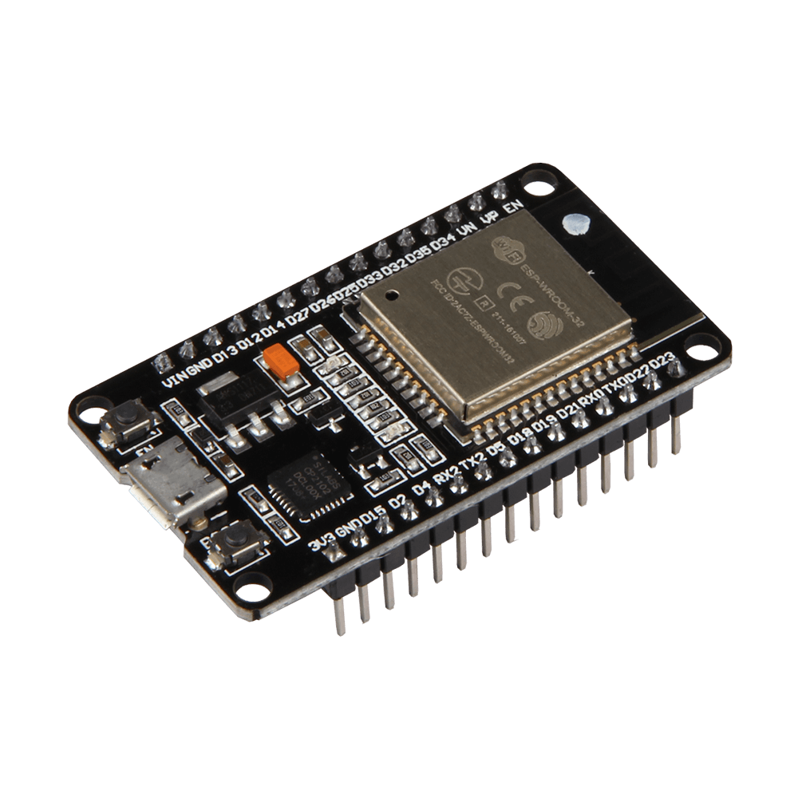
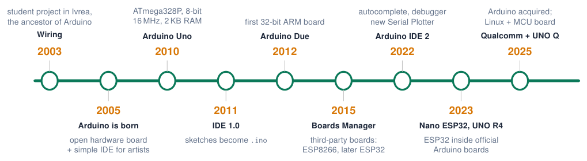
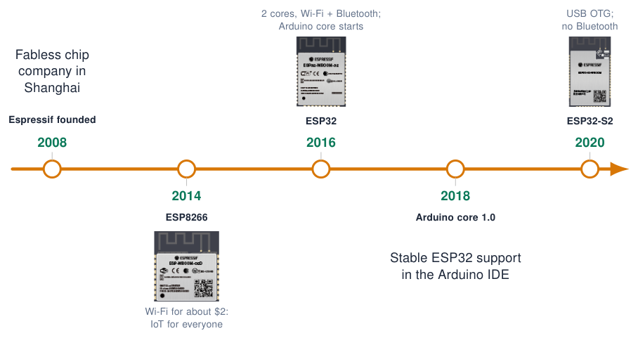
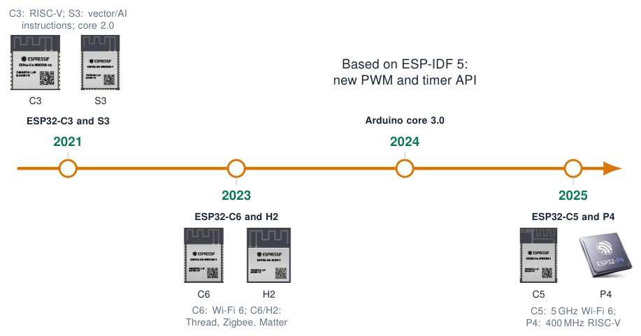

Introduction to the ESP32¶
What is the ESP32?¶
-
Low-cost System-on-Chip (SoC) by Espressif Systems (Shanghai), released in 2016.
-
Integrates dual-core CPU, Wi-Fi and Bluetooth on one die.
-
Successor of the ESP8266; the de-facto platform for IoT prototypes and products.
-
Programmable with:
-
Arduino IDE (Arduino-ESP32 core) this course
-
ESP-IDF (Espressif’s own C framework)
-
MicroPython, PlatformIO, Rust, Zephyr …

Sources: ESP32 Series Datasheet; Comparative analysis and practical implementation of the ESP32 microcontroller module for the Internet of Things
Timeline: the Arduino platform¶

What changed
8-bit \(\rightarrow\) 32-bit, 16 MHz \(\rightarrow\) hundreds of MHz, kilobytes \(\rightarrow\) megabytes, no radio \(\rightarrow\) Wi-Fi + Bluetooth, one board \(\rightarrow\) hundreds of boards.
What stayed the same
setup(), loop(), pinMode(), digitalWrite() … The same API on every board: that is why we can program an ESP32 “as an Arduino”.
Sources: Years are approximate Arduino IDE 2 Documentation; Arduino Language Reference
Timeline: Espressif and the ESP32 family (1/2)¶

Sources: Images: Espressif; dates approximate ESP32 Series Datasheet; arduino-esp32: Arduino core for the ESP32 family of SoCs
Timeline: Espressif and the ESP32 family (2/2)¶

Sources: Images: Espressif modules/SoCs; dates approximate arduino-esp32: Arduino core for the ESP32 family of SoCs; Migration from Arduino ESP32 Core 2.x to 3.0
ESP32 at a glance¶
240 MHz: 2 \(\times\) Xtensa LX6 cores
520 KB: internal SRAM
4 MB: SPI flash (in module)
34: programmable GPIO
Wi-Fi 4: 802.11 b/g/n, 2.4 GHz
BT 4.2: Classic + BLE
18 ch: 12-bit SAR ADC
10 μA: deep sleep (RTC timer)
Info
Also on chip: 2 \(\times\) 8-bit DAC, 10 capacitive touch inputs, 4 SPI, 2 I2C, 2 I2S, 3 UART, CAN 2.0 (TWAI), Ethernet MAC, SD/SDIO, IR (RMT), 16-channel LED PWM, motor PWM, hardware crypto.
Sources: ESP32 Series Datasheet
The ESP32 family¶
Note
All of them are supported by the same Arduino-ESP32 core; pin numbers and peripherals differ per chip.
Sources: Arduino ESP32 Core Documentation
ESP32 vs. Arduino Uno¶
| Arduino Uno (ATmega328P) | ESP32 DevKit | |
|---|---|---|
| CPU | 8-bit AVR, 1 core, 16 MHz | 32-bit Xtensa, 2 cores, 240 MHz |
| RAM / Flash | 2 KB / 32 KB | 520 KB / 4 MB |
| Logic level | 5 V | 3.3 V (not 5 V tolerant!) |
| ADC | 10-bit, 6 ch | 12-bit, 18 ch |
| DAC / Touch | – / – | 2 / 10 |
| Wireless | – | Wi-Fi + Bluetooth |
| Typical price | \(\approx\) EUR 20 (original) | \(\approx\) EUR 5–10 |
Porting Uno code
Same Arduino API, but check voltage levels, pin numbers and libraries that use AVR registers.
Quiz: ESP32 basics¶
-
How many CPU cores does the original ESP32 have, and at what clock?
Check your answer
Two Xtensa LX6 cores at up to 240 MHz.
-
You connect a 5 V sensor output that worked on an Arduino Uno directly to an ESP32 pin. Problem?
Check your answer
Yes: ESP32 pins are 3.3 V and not 5 V tolerant. Use a voltage divider or level shifter.
-
Which ESP32 variant would you choose for a Zigbee / Thread device?
Check your answer
ESP32-C6 or ESP32-H2 (IEEE 802.15.4 radio).
-
An example from 2021 uses
ledcSetup()and does not compile. Why?Check your answer
It was written for core 2.x; core 3.x uses
ledcAttach()/ledcWrite(pin, duty).